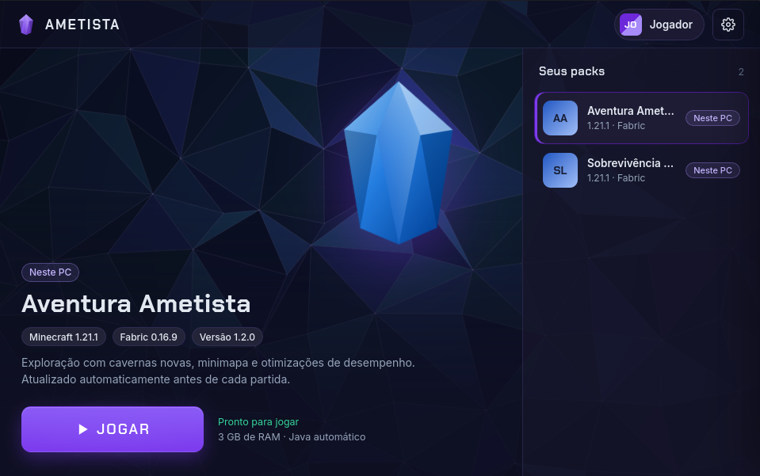

Ametista
Launcher para Minecraft: Java Edition, para Linux e Windows. Faz login com a conta Microsoft, instala o jogo e mantém os mods de cada pack atualizados.

O que ele faz
- Faz login com a conta Microsoft, pelo navegador.
- Baixa o jogo dos servidores da Mojang e confere o hash de cada arquivo.
- Instala o Fabric e a versão do Java que cada pack precisa.
- Antes de cada partida, sincroniza os mods do pack (formato packwiz).
- Guarda cada pack numa pasta própria, com mundos e configurações separados.
- Mostra apenas os packs definidos pelo mantenedor. Não há loja de mods.
Login e privacidade
O login segue o fluxo oficial da Microsoft para aplicativos de desktop (OAuth 2.0 com PKCE). O Ametista não tem senha de aplicativo nem servidor próprio.
- O navegador abre
login.microsoftonline.come você entra na sua conta. - A Microsoft devolve o acesso para o próprio computador (
http://localhost). - O Ametista obtém os tokens do Xbox Live e dos serviços do Minecraft.
- Ele confere se a conta tem o Minecraft: Java Edition e carrega o perfil.
- A senha é digitada só no site da Microsoft.
- Os tokens ficam no cofre de senhas do sistema (Secret Service no Linux, Gerenciador de Credenciais no Windows). Sair da conta apaga todos.
- Não há telemetria. O launcher se conecta apenas a Microsoft, Xbox Live, Mojang, Fabric, Adoptium (Java) e ao catálogo de packs.
- Contas offline não são suportadas.
Requisitos
- Windows
- Windows 10 ou 11, 64 bits.
- Linux
- x86_64. AppImage para qualquer distribuição, ou .deb para Debian, Ubuntu e derivados.
- Memória
- 4 GB de RAM ou mais (8 GB para packs grandes).
- Conta
- Conta Microsoft com o Minecraft: Java Edition.
- Java
- Não precisa instalar. O launcher baixa a versão certa.
Dúvidas
O Windows mostra um aviso ao abrir o instalador
O instalador ainda não tem assinatura digital, então o SmartScreen pode avisar. Clique em Mais informações e depois em Executar assim mesmo.
Como abrir o AppImage no Linux
Dê permissão de execução (botão direito → Propriedades → Permitir executar como programa, ou chmod +x no terminal) e abra o arquivo.
Onde ficam os mundos
Cada pack tem uma pasta própria. Em Configurações, use Abrir pasta do jogo.
Dá para adicionar outros mods?
Não pelo launcher. Os packs são definidos pelo mantenedor, para que todos joguem com os mesmos mods.
Problemas
Se algo não funcionar, abra uma issue no GitHub com o que aconteceu e o seu sistema operacional.